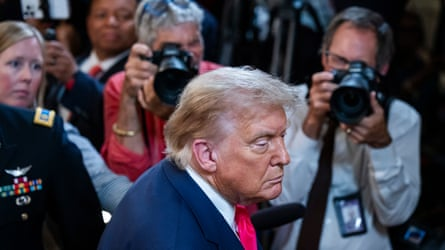
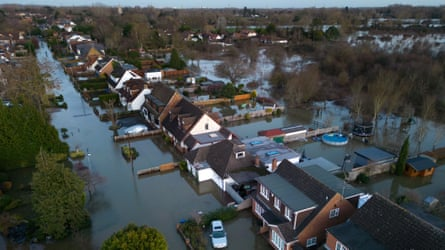

Good morning.
A delayed, behind-closed-doors intelligence briefing on the US bombing of Iranian nuclear facilities has divided senators down party lines , while Donald Trump ignited a fresh debate by claiming the Democrats had leaked a Pentagon assessment that found last weekend’s strikes had limited success.
Senators were briefed after a delay that led Democrats to accuse Trump of blocking congressional oversight on the strikes he had authorized without members’ approval.
Even as senators were being briefed, Trump escalated tensions by making a Truth Social post accusing Democrats of leaking the Pentagon report that suggested last weekend’s strikes had only delayed Iran’s nuclear program by months – contradicting the president’s insistence that it was “obliterated”.
- What did the defense secretary say? Pete Hegseth maintained that the strikes, which Iran’s Ayatollah Ali Khamenei has sought to downplay , had decimated Tehran’s nuclear program – an assessment largely based on AI modeling .
Trump ratchets up pressure on Republicans to vote for his ‘big, beautiful bill’
Donald Trump wants his legislation ready to be signed off by 4 July.Photograph: Jim Lo Scalzo/EPA
Donald Trump gathered congressional leaders and cabinet secretaries at the White House on Thursday to try to mobilize support for his controversial tax-and-spending bill that could struggle to pass through the Senate.
With the Senate majority leader, John Thune, considering an initial vote on the bill on Friday, it is unclear whether Republicans have enough votes to push it through Congress’s upper chamber. Trump wants the legislation ready to be signed off by 4 July.
- Democrats have labeled the bill the “big, ugly betrayal”. Why are they so opposed? Because it would slash Medicaid by the largest amount since its creation and cost an estimated 16 million people their insurance. The bill also cuts funding for the Supplemental Nutrition Assistance Program (Snap), which helps low-income Americans buy food.
RFK Jr’s new vaccine panel votes against preservative in flu shots in shock move
Vicky Pebsworth (left) and Dr Cody Meissner (right) attending the CDC vaccine panel meeting by video link.Photograph: Erik S Lesser/EPA
The health secretary Robert F Kennedy Jr’s vaccine panel has voted against seasonal influenza vaccines containing a specific preservative, in a shock move that could threaten future vaccine availability.
Kennedy, a vaccine skeptic, fired all 17 members of the previous federal vaccine panel in June and appointed eight new members who are all ideologically allied with him. He has urged against the use of thimerosal despite a lack of evidence of real-world harm.
Experts said the decision by the panel – five of whom voted for the restriction, while one abstained and one voted against – was not backed by the science. “There is a very big difference between what was shared at the meeting versus what is reality,” said Dr Sean O’Leary, the chair of the American Academy of Pediatrics Committee on Infectious Diseases. “The science on thimerosal is settled, and the rhetoric being used to suggest otherwise is misleading and harmful.”
- What impact could the restriction have? Dr Cody Meissner, the panel member who was the only “no” vote, said he was concerned that people may miss out on an influenza vaccine if the only available version contained thimerosal, stressing that the risk from flu “is so much greater than the nonexistent – as far as we know – risk from thimerosal”.
In other news …
Takahiro Shiraishi in a police car in Tokyo in 2017. Japan has reportedly executed the man called the ‘Twitter killer’.Photograph: Kyodo/Reuters
- Japan has reportedly executed a man labeled the “Twitter killer” who murdered nine people he met on the site, the first time the country has carried out the death penalty since 2022.
- Undocumented pregnant women in the Dominican Republic are dying because they are avoiding going to hospital in fear of deportation.
- Activists and a Native American tribe have protested against the creation of an outdoor migrant detention camp in the Florida Everglades nicknamed “Alligator Alcatraz” .
- A US citizen was arrested during an immigration raid in downtown Los Angeles this week.
Stat of the day: up to 35,000 Ukrainian missing children thought to be held by Russia
Ukrainian children from a Donetsk orphanage at a camp in Zolotaya Kosa, Russia. Up to 35,000 Ukrainian children may be held in Russia, with many feared to have been adopted.Photograph: AP
Up to 35,000 Ukrainian children are missing, say experts who believe them to be held in Russia and the territories it occupies. They fear many have been sent to military camps, placed in foster care or adopted by Russian families. Nathaniel Raymond, the executive director of Yale’s Humanitarian Research Lab, which has been investigating the abductions, said: “This is likely the largest child abduction in war since world war two – comparable to the Germanification of Polish children by the Nazis.”
Don’t miss this: ‘We just want to stop people being murdered’ – Kneecap on Palestine, protest and provocation
(From left) Kneecap’s DJ Próvai, Mo Chara and Móglaí Bap.Photograph: Peadar Ó Goill
As the Irish rap group Kneecap prepare to perform at Glastonbury this weekend, they discuss the popularity of their pro-Palestine stance, their music’s satirical character, and what they see as misplaced attention on themselves instead of on Gaza. “They don’t want us coming to the American festivals, because they don’t want videos of young Americans chanting ‘free Palestine’ [even though] that is the actual belief in America,” band member Mo Chara said.
Climate check: campaigners call for storms to be named after oil and gas companies
Flood water surrounds homes in Wraysbury, Berkshire, in the UK, after a storm in 2024.Photograph: Daniel Leal/AFP/Getty Images
Campaigners have called for storms to be named after fossil fuel companies , after the UK’s weather forecasting service launched a storm naming competition. They recommended doing so to remind the public of the connection between burning fossil fuels and more frequent and severe extreme weather.
Last Thing: ‘I won a Timothée Chalamet lookalike contest’
‘He asked for a photo with me’: Miles Mitchell (left) and Timothée Chalamet at the 2025 Golden Globes.Photograph: Gregg Deguire/GG2025/Penske Media/Getty Images
When Miles Mitchell saw a flyer advertising a Timothée Chalamet lookalike contest in New York, he thought it was a joke. But he’d gone viral in the past because people thought he looked like the actor – so he decided to give it a go. He describes how winning this bizarre competition changed his life – and how soon Chalamet was asking him for photos.
Sign up
First Thing is delivered to thousands of inboxes every weekday. If you’re not already signed up, subscribe now .
Get in touch
If you have any questions or comments about any of our newsletters please email newsletters@theguardian.com